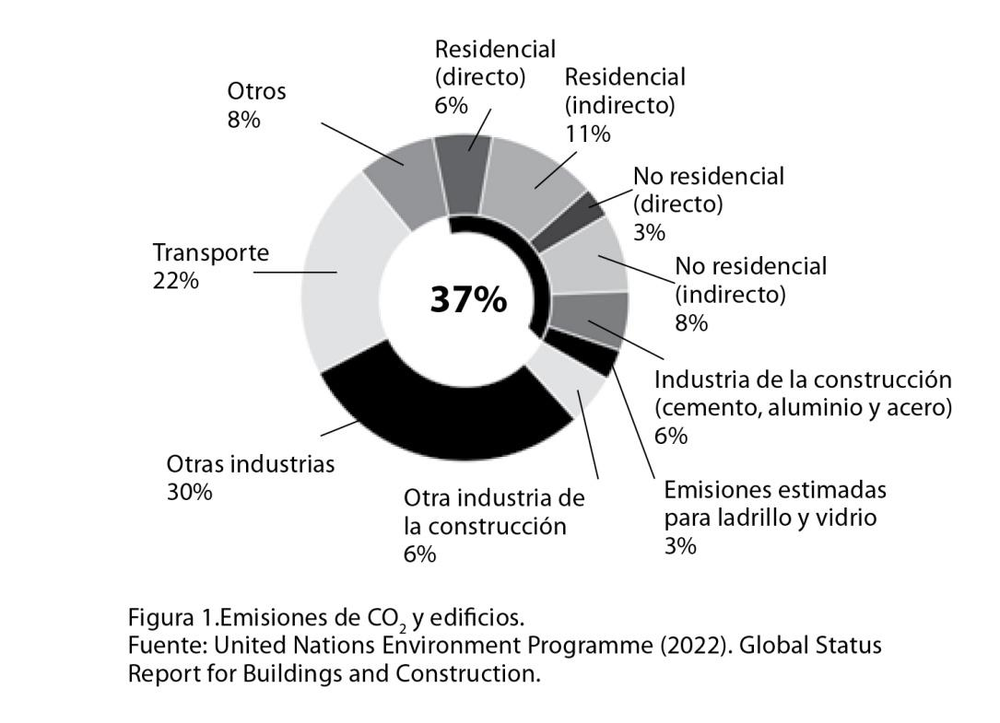

CAPÍTULO 7
La ciudad y los edificios,
¿cómo pueden adaptarse a nuevas
condiciones climáticas?

María José Leveratto
Arquitecta graduada en la Universidad de Buenos Aires y Master of Science en Arizona State University. Consultora en proyectos ambientales de arquitectura y urbanismo. Profesora de grado y posgrado en las Universidades de Buenos Aires, del Litoral, Rafaela y Belgrano. Investigadora en el Centro de Investigación Hábitat y Energía de la Facultad de Arquitectura, Diseño y Urbanismo (UBA).
A partir de la revolución industrial, y fundamentalmente desde la década del sesenta del siglo XX, el diseño y construcción de edificios se desarrolla siguiendo paradigmas basados en una enorme dependencia de recursos externos para su materialización y, sobre todo, su operación.
Electricidad y gas garantizan calefacción, refrigeración,iluminación artificial, cocción, uso de ascensores y la posibilidad de elevar agua para distribuirla entre las distintas viviendas. Los alimentos provienen de sitios alejados que requieren transporte y medios mecánicos de conservación; y es indispensable contar con servicios externos que retiren y traten residuos sólidos y líquidos. Todos estos procesos, fundamentales para el confort y la salubridad de las personas, conforman estructuras complejas y altamente vulnerables ya que, frente a la falta de cualquiera de los insumos que posibilitan su funcionamiento (como, por ejemplo, un corte de energía o la interrupción en la recolección de basura), los edificios se transforman rápidamente en espacios inhabitables.
Casi el 90% de la población argentina vive en ciudades, y a esta escala se verifican condiciones similares de vulnerabilidad en los distintos lugares de nuestro país, ya que las áreas urbanas tienen una altísima dependencia en recursos (energía externa y tecnología para garantizar su funcionamiento), tanto en condiciones normales como en caso de emergencias o eventos extremos. Para el control de inundaciones, las respuestas tradicionales en nuestras metrópolis son grandes obras de infraestructura con sistemas de bombeo, entubamientos, diques contenedores, entre otras. Frente a altas temperaturas: equipos de aire acondicionado. Este modelo, que entiende a las ciudades como estructuras rígidas y asentadas sobre territorios completamente antropizados, se organiza a partir de "dominar con tecnología" cualquier condición que ponga en riesgo la habitabilidad y la seguridad de sus habitantes.
En suma, tanto los edificios como la ciudad en su conjunto configuran sistemas estancos y dependientes de los servicios de grandes infraestructuras de ingeniería y de energía externa. La falta o inoperancia de cualquiera de ellos significa el colapso de su funcionalidad y puede producir situaciones peligrosas, en particular frente a eventos extremos o inesperados. Por su impacto, esta situación es crítica cuando se trata de poblaciones que habitan asentamientos informales o marginales, y también para aquellas ubicadas en áreas con alta densidad poblacional y superficie construida en general.
Esta dependencia de los edificios de recursos externos se verifica también al analizar los consumos de energía del sector y sus niveles de emisión de gases de efecto invernadero (GEI). Tal como se observa en la figura 1, la construcción y operación de edificios representa, aproximadamente, el 37% del total de las emisiones de CO2 del mundo (United Nations Environment Programme, 2022) y han alcanzado su máximo histórico en el año 2021. Como puede observarse en el grafico a continuación, es el sector que tiene mayor porcentaje total de emisiones de CO2, con valores promedio superiores al transporte y la industria.

Es importante tener en cuenta que el cambio climático impone nuevas condiciones, y a ellas deberán responden nuestros edificios: el incremento de eventos extremos con mayor riesgo a inundaciones, aumento de precipitaciones intensas, cambios en el régimen de vientos y elevación del nivel del mar (Barros, 2015), más días con altas temperaturas promedio y más frecuentes olas de calor (Barros y Camilloni, 2016). A este aumento de temperaturas promedio se suma el calentamiento producto de islas de calor que afectan con intensidad las áreas más densamente construidas, particularmente en los meses de verano (Leveratto, Evans y de Schiller, 2000).
Todos estos motivos reafirman la importancia de proponer estrategias de adaptación para disminuir la dependencia y vulnerabilidad del sector edilicio, y que impliquen respuestas que, además,permitan reducir las emisiones de GEI y mejoren la calidad de vida, seguridad y confort. La población urbana pasa la mayor parte de su tiempo en espacios interiores, donde desarrolla una variedad de actividades domésticas, educativas, laborales o recreativas.
Estos espacios actúan como buffers o contenedores de protección frente a condiciones exteriores adversas, pero si bien su función es cobijar y proteger a las personas, pueden volverse obsoletos o, incluso, peligrosos cuando su diseño no tiene la capacidad de adaptarse al cambio climático.
Tormentas fuertes e inundaciones podrían poner en riesgo la estabilidad estructural de una construcción o provocar la voladura de techos; cortes en el suministro de energía complejizarían la evacuación de un edificio en altura, o sequías extremas afectarían la calidad de materiales e incrementarían los peligros de incendio. Como puede observarse, la interrelación entre mitigación, adaptación y reducción de riesgo a desastres es particularmente fuerte cuando analizamos el sector edilicio, ya que por sus altas emisiones de GEI es un impulsor del cambio climático y, por otro lado, es uno de los sectores que sufrirá más sus consecuencias. Muchas de las medidas que pueden implementarse tienen la característica de lograr simultáneamente la mitigación, la adaptación y la reducción de riesgos.
Desde esa mirada, se desarrollarán a continuación algunas ideas que, a distinta escala, buscan acercarse a este objetivo a partir de revalorizar y entender la relación de la ciudad con la naturaleza y sus ciclos, de conocer y diseñar teniendo en cuenta las características climáticas de cada lugar, de priorizar la conformación de espacios flexibles y versátiles para afrontar condiciones cambiantes.Y, finalmente, pero no menos importante, comprender la necesidad de destinar ideas y recursos económicos para la rehabilitación y reciclado del stock edilicio existente.
Incorporar soluciones basadas en la naturaleza de "infraestructura azul y verde"
Las soluciones basadas en la naturaleza (SbN) proponen valorar y proteger los procesos naturales como parte integral en el funcionamiento de la ciudad y así maximizar los servicios ambientales que ofrecen los ciclos del agua, el suelo y la vegetación de manera consciente en la planificación del territorio.
En líneas generales, las SbN están asociadas al incremento de áreas menos antropizadas para infiltración, retención y almacenamiento de agua de lluvia, al incremento de arbolado para el refrescamiento por sombreado, evapotranspiración y a la generación de brisas para mejorar las condiciones de confort térmico, particularmente dentro de la trama más densa de la ciudad. Sirven para reducir el efecto isla de calor y proteger a la población urbana frente a altas temperaturas y olas de calor (Agencia Europea de Medio Ambiente, 2015 y United Nations Environment Programme, 2022).
Estas intervenciones de "infraestructura azul y verde" (en relación al manejo del agua y de la vegetación) son inversiones que resultan muy favorables en términos económicos, si se la compara con las "soluciones grises" a gran escala convencionalmente aplicadas para enfrentar, por ejemplo, la problemática de inundaciones recurrentes (Agencia Europea de Medio Ambiente 2017). Inversiones que otorgan también mayor resiliencia frente a emergencias, ya que por redundancia (Kozak, 2020), diversidad y distribución territorial complementan, refuerzan y, en algunos casos, hasta reemplazan los sistemas tradicionales de grandes obras de ingeniería (Silvestri, 2016).
Al tener una mirada integral con soporte en la vegetación, el agua, el suelo y la geografía aportan numerosos beneficios ambientales, sociales, culturales y económicos, además de colaborar con la moderación climática. Diversos estudios demuestran que mejoran la calidad del aire y del agua (United States Environmental Protection Agency, 2015), enriquecen la biodiversidad (Lo, 2016), generan empleo al ofrecer distintas oportunidades de desarrollo económico a partir de actividades relacionadas con la producción de alimentos, materias primas y compostaje (Lin et al., 2017), y proporcionan nuevas áreas de descanso y recreación ofreciendo a la población urbana acceso a entornos más naturales (Benedict y McMahon, 2002).
Si bien algunas soluciones basadas en la naturaleza de "infraestructura azul y verde", como la incorporación de grandes parques o bosques urbanos, deben planificarse a gran escala, otras pueden implementarse y replicarse a menor escala, como en un lote, edificio o espacio público.Por ejemplo, la introducción de arbolado, la preservación e incremento de suelo permeable, los techos verdes, jardines de lluvia y una diversidad de sistemas para la retención y almacenamiento de lluvias.
Imagen 1. Jardín de lluvia en la ciudad de Montevideo, Uruguay.
Fuente: Intendencia Montevideo (2021). Sistemas de drenaje sostenibles. Disponible en: https://montevideo.gub.uy/areas-tematicas/ambiente/saneamiento/sistemas-de-drenaje-sostenibles
Finalmente, es importante destacar otro beneficio que aportan las áreas abiertas, como parques y plazas dentro de la trama urbana, en este caso en relación a la seguridad y la flexibilidad de respuesta frente a emergencias. La experiencia de ciudades que han pasado por desastres de distinto tipo ha demostrado la importancia de contar con espacio libre disponible para acomodar servicios o actividades que tuvieron que ser desplazadas, ya que permiten conformar lugares alternativos y seguros para el encuentro y la organización de la población cuando los espacios destinados para esa función no pueden utilizarse.
Planificar y diseñar teniendo en cuenta las condiciones bioclimáticas de cada lugar
Como se mencionó al comienzo, la disponibilidad de petróleo, gas y carbón ha permitido la construcción de ciudades y edificios siguiendo paradigmas que se basan en el consumo y derroche de recursos, en particular de energía. En ese modelo de desarrollo no es importante tener en cuenta el clima ni las condiciones ambientales de cada lugar a la hora de diseñar. La misma tipología puede proponerse desde Ushuaia a la Quiaca, ya que el confort y la habitabilidad de edificios se garantizan con sistemas mecánicos de calefacción o refrigeración.
Es importante recordar también que los equipos de aire acondicionado emiten el calor extraído de los ambientes hacia el exterior, y este es uno de los factores que incrementan en áreas urbanas la formación de islas de calor. Un ejemplo sencillo para comprender esta problemática es lo que sucede con una gran torre vidriada: cuando baja el sol se convierte en un inmenso invernadero generador de calor, y donde sólo es posible permanecer gracias a la continua inyección de aire frio por medios mecánicos que, a su vez, emiten el calor acumulado dentro del edificio hacia el espacio público, y provocan el aumento de la temperatura del aire exterior.
Planificar y diseñar con criterios bioclimáticos supone comprender las características climáticas del sitio, incluidos los escenarios futuros. Es necesario para proponer soluciones que permitan lograr espacios donde se maximice el aprovechamiento de las condiciones favorables para protegerse de las desfavorables. Esta mirada prioriza propuestas arquitectónicas y paisajísticas que responden a un entorno y valorizan los recursos disponibles, tanto climáticos, como socioculturales, económicos y ambientales. Integra e incluye preocupaciones por el impacto ambiental de los espacios construidos con diseño centrado en las personas.
En busca de lograr estos objetivos, los proyectos se trabajan a distintas escalas: la implantación en el terreno, el diseño de los espacios exteriores, la forma, altura y orientación de los volúmenes, la ubicación y tamaño de las aberturas, la selección de materiales y la definición de detalles constructivos. Y en este proceso se tienen en cuenta tres aspectos fundamentales: la luz y el calor del sol, el viento y movimiento de aire, y las propiedades físicas de los materiales.
Por ejemplo, para favorecer el refrescamiento en espacios exteriores, las estrategias de diseño a utilizar priorizarán la protección solar y la captación de brisas. A partir de conocer la dirección de los vientos más favorables en periodos cálidos y la ubicación del sol en el cielo, se tomarán decisiones que permitan lograr sombra y ventilación que conformarán microclimas más confortables. En climas secos se pueden incorporar materiales con inercia térmica para reducir picos de temperatura y potenciar el refrescamiento por evapotranspiración, confuentes o pequeños espejos de agua para humidificar el aire. En cambio, si las condiciones exteriores fueran frías, serán de importancia estrategias de diseño para maximizar la ganancia solar y la protección de vientos fuertes.
A escala edilicia se cuenta con una variedad de soluciones para lograr confort natural. En líneas generales, cuando proyectamos en climas templados, es importante, siempre que sea posible, orientar los ambientes principales y sus aberturas hacia el Ecuador (el norte en el hemisferio sur) para favorecer la ganancia solar en el invierno y poder protegerse de la radiación directa durante los meses cálidos de manera sencilla con aleros. Se recomienda evitar grandes ventanales hacia el oeste, ya que sobre esa orientación impacta el sol fuerte y de baja altura en las tardes de verano y, justamente por su ángulo de inclinación bajo resulta complejo de bloquear con parasoles. Los croquis a mano alzada de Le Corbusier, uno de los maestros de la arquitectura moderna, muestran en la figura 2, cómo entender de manera sencilla la relación entre edificios y el recorrido del sol en los meses de invierno y verano.
Figura2. Croquis del arquitecto Le Corbusier, circa 1930
Fuente: Curtis, W. (1986). Le Corbusier Ideas and Forms. Londres: Phaidon.
A la hora de dimensionar las aberturas, hay que tener en cuenta que el vidrio es un material con baja capacidad aislante del calor y del frio. Si bien existen en el mercado una variedad cada vez más amplia de paneles compuestos dobles o triples de alta eficiencia, la combinación más recomendable y económica es proponer paños de vidrio de dimensiones adecuadas para garantizar vistas, luz natural, ventilación y el ingreso de sol en invierno, e incluir, si es posible,también persianas, aleros u otros elementos de protección exterior.
Para terminar esta sintética enumeración de propuestas, vale destacar que es fundamental incorporar muy buenos niveles de aislamiento térmico en paredes, techos y, en algunos climas, también en el piso. En general, ni las normativas ni los profesionales en nuestro contexto reconocen la importancia de aislar bien para evitar pérdidas y ganancias de calor a través de la envolvente de edificios para contribuir de manera significativa a la eficiencia energética.
Todas las estrategias mencionadas, en muchos casos sin costo o de costo relativamente bajo, permiten maximizar las condiciones de confort sin depender de equipos de aire acondicionado ni sistemas mecánicos para el acondicionamiento térmico y, además, mejoran la capacidad de adaptación de los edificios, la calidad de vida de sus habitantes y colaboran con el ahorro de energía.
Proponer diseños abiertos, flexibles y de transformación sencilla
Tradicionalmente, los edificios se han planificado como objetos terminados y permanentes en base a un contexto que se suponía constante a lo largo de todo su ciclo de vida. El desafío inevitable que nos plantea el cambio climático es comenzar a proyectar con un gran número de incertezas que pondrán a prueba la capacidad de respuesta y adaptación de los espacios construidos (Sinclair et al., 2012).
La pandemia de COVID-19 puso en evidencia la necesidad de adaptación en edificios. Hubo que transformar locales para poder recibir pacientes en espacios pensados con otro destino, fue imprescindible demoler muros interiores, abrir ventanas y ampliar habitaciones para ventilar y reducir los riesgos de contagio. Esta experiencia brinda herramientas para comprender las incertezas que plantea el futuro, y muestra la importancia de diseñar estructuras, instalaciones y espacios flexibles y sencillos de modificar para responder a situaciones accidentales o esporádicas. Capacidad de adaptación y transformación que, en algunos casos, puede llegar a suponer el traslado de un edificio a otro sitio a causa, por ejemplo, de una inundación o sequía extrema.
La búsqueda de soluciones es compleja, ya que requiere proponer estructuras robustas y eficientes que puedan resistir eventos extremos pero que a la vez sean versátiles, abiertas y flexibles para modificar sus funciones o características espaciales, si fuera necesario. Edificios diseñados con la capacidad de ajustarse a cambios futuros sin requerir demoliciones, altos costos ni generar residuos. Viviendas, escuelas, centros médicos que puedan abrirse o cerrarse según las condiciones exteriores, albergar usos diferentes o simultáneos en caso de emergencia e, inclusive, contar con la posibilidad de desarmarlos, trasladarlos y volverlos a armar de manera sencilla y rápida sin perder calidad. En definitiva, construcciones con la suficiente elasticidad como para poder responder tanto a las condiciones ambientales como a las necesidades y deseos de sus usuarios. Edificios no neutrales o indiferentes al contexto, sino vivos y ecológicamente sinérgicos con su entorno que, como se ejemplifica en la figura 3, puedan adaptarse a distintos usos, modos de vida o contingencias.
Figura 3. Ejemplo de espacios con usos flexibles.
Fuente: ADP Architecture (2021). Adaptable Flats. Disponible en:https://adp-architecture.com/adaptable-flats/
Rehabilitar el stock de edificios construidos
Una de las tareas prioritarias en un contexto de cambio climático, es la rehabilitación del stock existente. Como ya se mencionó, los edificios construidos durante los últimos 50 años no han sido diseñados para afrontar, por ejemplo, altas temperaturas. La inmensa mayoría está mal aislada térmicamente, tiene excesivas y poco eficientes superficies vidriadas sin protecciones frente al sol y, particularmente en zonas urbanas, su capacidad de refrescamiento por ventilación natural es limitada.
En ese marco, incorporar propuestas para la transformación y adaptación de lo existente es no sólo prioritario, sino también un espacio de oportunidad: La renovación del stock construido, además de aportar a una mayor resiliencia, colaborar con la reducción de emisiones de gases de efecto invernadero y mejorar las condiciones de confort en edificios, tiene un impacto significativo en la generación de empleos y en el dinamismo de la economía local. Si la construcción de un edificio nuevo demanda, en líneas generales, un 50% de materiales y otro porcentaje similar de mano de obra, la rehabilitación de lo existente insume un 75% de mano de obra y sólo un 25% de materiales (Rypkema, 2011). En un contexto que combina la urgencia de reducir el consumo de recursos, como hormigón y acero, con la necesidad de ofrecer empleo, estos datos, si bien aproximados, permiten afirmar que invertir en la mejora de edificios puede ofrecer ventajas, tanto ambientales, como sociales y económicas.
Por reconocer estos beneficios y considerarlos como herramienta de estímulo a la recuperación económica pospandemia, la Comisión Europea financió a partir del año 2020 un programa para la rehabilitación de edificios públicos y privados llamado Renovation Wave (Ola de Renovación) con el objetivo de incrementar la competitividad, favorecer el desarrollo de economías, generar empleos verdes y, a la vez, fomentar iniciativas de eficiencia energética y adaptación al cambio climático (Comisión Europea, 2020). Las tres patas de este programa fueron: la incorporación de energías renovables, el recambio de carpinterías de puertas y ventanas por soluciones con vidrios compuestos de mayor calidad y marcos de alta hermeticidad, y la mejora en el aislamiento térmico de paredes y techos de edificios.
Figura 4. Rehabilitación energética, mejoramiento del aislamiento térmico en edificios.
Fuente: El País (2020). Una apuesta por la renovación urbana. El País. Disponible en: https://elpais.com/economia/2020-09-29/una-apuesta-por-la-renovacion-urbana.html
Finalmente
El sexto informe de evaluación del Panel Intergubernamental de Expertos sobre el Cambio Climático (IPCC) destaca que el sector edilicio tiene la oportunidad de alcanzar una rápida transformación a partir de políticas integrales que combinen tecnología y acción (Intergovernmental Panel on Climate Change, 2022). Y afirma con alto grado de confianza que con estándares elevados de eficiencia en edificios, instalaciones y equipamiento, y con el acompañamiento de instrumentos de financiación, asistencia técnica e innovación es posible alcanzar los cambios necesarios hacia construcciones de cero carbono y adaptadas al cambio climático. Destaca también la importancia de contar con códigos urbanísticos y de edificación que definan exigencias de calidad ambiental, y la utilidad de promover estrategias de difusión y acceso a información como otros componentes indispensables para lograr este objetivo.
Esta oportunidad de transformación se sostiene a partir del desarrollo de sistemas de gobernanza y de políticas públicas capaces de introducir y sostener medidas significativas que incluyen regulaciones en usos del suelo y densidades construibles, obligaciones tributarias, reglamentaciones, incentivos, subvenciones y otras herramientas de promoción y control. A eso se suma al compromiso del sector privado para avanzar hacia nuevos modelos, a partir de reconocer que es posible, y también rentable, transformarse y modificar la forma en que tradicionalmente se planifican, diseñan y construyen edificios.
El concepto de adaptabilidad de los asentamientos humanos forma parte de los Objetivos de Desarrollo Sostenible (ODS) de la nueva Agenda 2030, donde se propone lograr ciudades inclusivas, seguras, resilientes y sostenibles con acceso a servicios básicos, energía, vivienda y transporte para todos. Revalorizar y entender la relación de la ciudad con la naturaleza, diseñar teniendo en cuenta las características climáticas de cada lugar, priorizar la conformación de espacios flexibles y versátiles, y la rehabilitación de construcciones existentes son algunas de las estrategias que reafirman esta capacidad de transformación planteada por el IPCC. Se proponen como parte de las herramientas con las que cuenta el sector edilicio para el cumplimiento de los objetivos de desarrollo sostenible.